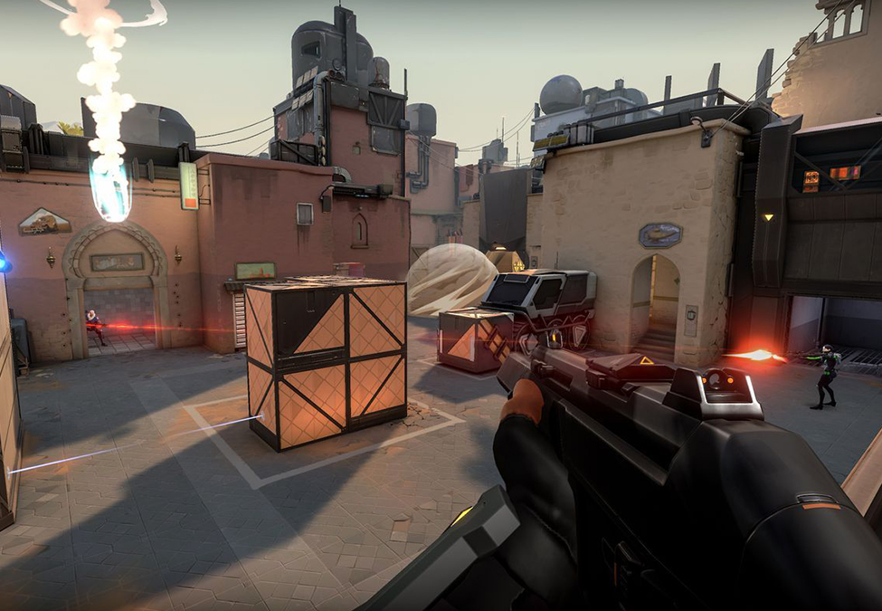
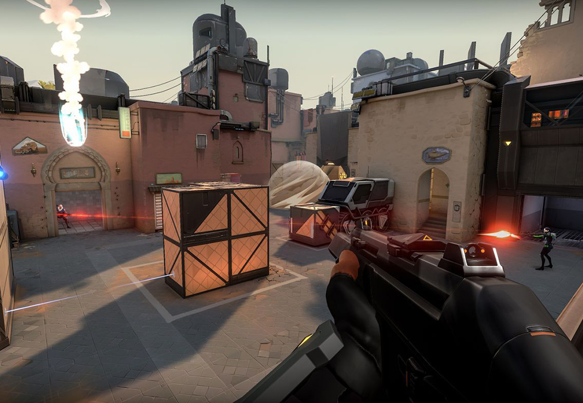

Valorant is a team-based tactical shooter and first-person shooter set in the near-future. Players play as one of a set of agents, characters designed based on several countries and cultures around the world. In the main game mode, players are assigned to either the attacking or defending team with each team having five players on it. Agents have unique abilities each requiring charges, as well as a unique ultimate ability which requires charging through kills, deaths, or spike actions. Each player starts each round with a "classic" pistol and with one or more "signature ability" charge. Other weapons and ability charges can be purchased using an in game credit that is rewarded on player's performance.
Learning how to combine Agent abilities and apply them to each of the game’s maps is a limitless learning curve that always encourages experimentation and unorthodox play. Valorant may not win over the FPS purists, but it’s infinitely more accessible and offers new players an inroad that doesn’t involve being really, really good at clicking on heads.
Valorant system requirements
- CPU: CPU: Intel i3-370M or higher
- GPU: Intel HD 3000 or better
- RAM: 6 GB of memory
- HDD: 35 GB of free space
- OS: Windows 7 (Service Pack 1) or higher (64-bit) operating system
- DirectX: 11.0 or higher
 
